Section3.1Using derivatives to identify extreme values¶ permalink
{In this section, we strive to understand the ideas generated by the following important questions:
What are the critical numbers of a function \(f\) and how are they connected to identifying the most extreme values the function achieves?
How does the first derivative of a function reveal important information about the behavior of the function, including the function's extreme values?
How can the second derivative of a function be used to help identify extreme values of the function?
}
Subsection3.1.1Introduction
In many different settings, we are interested in knowing where a function achieves its least and greatest values. These can be important in applications – say to identify a point at which maximum profit or minimum cost occurs – or in theory to understand how to characterize the behavior of a function or a family of related functions. Consider the simple and familiar example of a parabolic function such as \(s(t) = -16t^2 + 32t + 48\) (shown at left in Figure 3.1.1) that represents the height of an object tossed vertically: its maximum value occurs at the vertex of the parabola and represents the highest value that the object reaches. Moreover, this maximum value identifies an especially important point on the graph, the point at which the curve changes from increasing to decreasing.
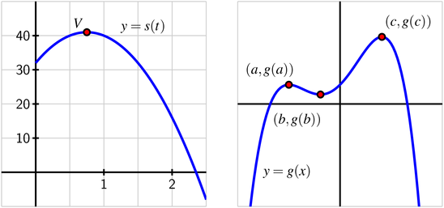Figure3.1.1At left, \(s(t) = -16t^2 + 24t + 32\) whose vertex is \((\frac{3}{4}, 41)\); at right, a function \(g\) that demonstrates several high and low points.
More generally, for any function we consider, we can investigate where its lowest and highest points occur in comparison to points nearby or to all possible points on the graph. Given a function \(f\), we say that \(f(c)\) is a global or absolute maximum \knownindex{\lt main>maximum\lt /main>\lt sub>global\lt /sub>} \knownindex{\lt main>maximum\lt /main>\lt sub>absolute\lt /sub>} provided that \(f(c) \ge f(x)\) for all \(x\) in the domain of \(f\), and similarly call \(f(c)\) a global \knownindex{\lt main>minimum\lt /main>\lt sub>global\lt /sub>} or absolute minimum \knownindex{\lt main>minimum\lt /main>\lt sub>absolute\lt /sub>} whenever \(f(c) \le f(x)\) for all \(x\) in the domain of \(f\). For instance, for the function \(g\) given at right in Figure 3.1.1, \(g\) has a global maximum of \(g(c)\), but \(g\) does not appear to have a global minimum, as the graph of \(g\) seems to decrease without bound. We note that the point \((c,g(c))\) marks a fundamental change in the behavior of \(g\), where \(g\) changes from increasing to decreasing; similar things happen at both \((a,g(a))\) and \((b,g(b))\), although these points are not global mins or maxes.
For any function \(f\), we say that \(f(c)\) is a local maximum \knownindex{\lt main>maximum\lt /main>\lt sub>local\lt /sub>} or relative maximum \knownindex{\lt main>maximum\lt /main>\lt sub>relative\lt /sub>} provided that \(f(c) \ge f(x)\) for all \(x\) near \(c\), while \(f(c)\) is called a local \knownindex{\lt main>minimum\lt /main>\lt sub>local\lt /sub>} or relative minimum \knownindex{\lt main>minimum\lt /main>\lt sub>relative\lt /sub>} whenever \(f(c) \le f(x)\) for all \(x\) near \(c\). Any maximum or minimum may be called an extreme value \knownindex{\lt main>extreme value\lt /main>} of \(f\). For example, in Figure 3.1.1, \(g\) has a relative minimum of \(g(b)\) at the point \((b,g(b))\) and a relative maximum of \(g(a)\) at \((a,g(a))\). We have already identified the global maximum of \(g\) as \(g(c)\); this global maximum can also be considered a relative maximum.
We would like to use fundamental calculus ideas to help us identify and classify key function behavior, including the location of relative extremes. Of course, if we are given a graph of a function, it is often straightforward to locate these important behaviors visually. We investigate this situation in the following preview activity.
Preview Activity
Consider the function \(h\) given by the graph in Figure 3.1.2. Use the graph to answer each of the following questions.
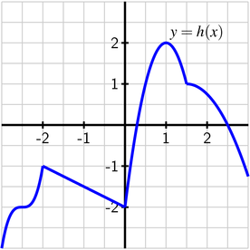Figure3.1.2The graph of a function \(h\) on the interval \([-3,3]\).
Identify all of the values of \(c\) for which \(h(c)\) is a local maximum of \(h\).
Identify all of the values of \(c\) for which \(h(c)\) is a local minimum of \(h\).
Does \(h\) have a global maximum? If so, what is the value of this global maximum?
Does \(h\) have a global minimum? If so, what is its value?
Identify all values of \(c\) for which \(h'(c) = 0\).
Identify all values of \(c\) for which \(h'(c)\) does not exist.
True or false: every relative maximum and minimum of \(h\) occurs at a point where \(h'(c)\) is either zero or does not exist.
True or false: at every point where \(h'(c)\) is zero or does not exist, \(h\) has a relative maximum or minimum.
Subsection3.1.2Critical numbers and the first derivative test
If a function has a relative extreme value at a point \((c,f(c))\), the function must change its behavior at \(c\) regarding whether it is increasing or decreasing before or after the point.
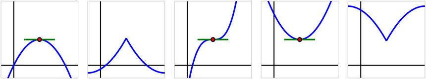Figure3.1.3From left to right, a function with a relative maximum where its derivative is zero; a function with a relative maximum where its derivative is undefined; a function with neither a maximum nor a minimum at a point where its derivative is zero; a function with a relative minimum where its derivative is zero; and a function with a relative minimum where its derivative is undefined.
For example, if a continuous function has a relative maximum at \(c\), such as those pictured in the two leftmost functions in Figure 3.1.3, then it is both necessary and sufficient that the function change from being increasing just before \(c\) to decreasing just after \(c\). In the same way, a continuous function has a relative minimum at \(c\) if and only if the function changes from decreasing to increasing at \(c\). See, for instance, the two functions pictured at right in Figure 3.1.3. There are only two possible ways for these changes in behavior to occur: either \(f'(c) = 0\) or \(f'(c)\) is undefined.
Because these values of \(c\) are so important, we call them critical numbers. More specifically, we say that a function \(f\) has a critical number \knownindex{\lt main>critical number\lt /main>} at \(x = c\) provided that \(c\) is in the domain of \(f\), and \(f'(c) = 0\) or \(f'(c)\) is undefined. Critical numbers provide us with the only possible locations where the function \(f\) may have relative extremes. Note that not every critical number produces a maximum or minimum; in the middle graph of Figure 3.1.3, the function pictured there has a horizontal tangent line at the noted point, but the function is increasing before and increasing after, so the critical number does not yield a location where the function is greater than every value nearby, nor less than every value nearby.
We also sometimes use the terminology that, when \(c\) is a critical number, that \((c,f(c))\) is a critical point \knownindex{\lt main>critical point\lt /main>} of the function, or that \(f(c)\) is a critical value \knownindex{\lt main>critical value\lt /main>}.
The first derivative test \knownindex{\lt main>first derivative test\lt /main>} summarizes how sign changes in the first derivative indicate the presence of a local maximum or minimum for a given function.
{
First Derivative Test:\knownindex{\lt main>first derivative test\lt /main>} If \(p\) is a critical number of a continuous function \(f\) that is differentiable near \(p\) (except possibly at \(x = p\)), then \(f\) has a relative maximum at \(p\) if and only if \(f'\) changes sign from positive to negative at \(p\), and \(f\) has a relative minimum at \(p\) if and only if \(f'\) changes sign from negative to positive at \(p\).
}
We consider an example to show one way the first derivative test can be used to identify the relative extreme values of a function.
Let \(f\) be a function whose derivative is given by the formula \(f'(x) = e^{-2x}(3-x)(x+1)^2\). Determine all critical numbers of \(f\) and decide whether a relative maximum, relative minimum, or neither occurs at each.
Solution.
Since we already have \(f'(x)\) written in factored form, it is straightforward to find the critical numbers of \(f\). Since \(f'(x)\) is defined for all values of \(x\), we need only determine where \(f'(x) = 0\). From the equation
\[
e^{-2x}(3-x)(x+1)^2 = 0
\]
and the zero product property, it follows that \(x = 3\) and \(x = -1\) are critical numbers of \(f\). (Note particularly that there is no value of \(x\) that makes \(e^{-2x} = 0\).)
Next, to apply the first derivative test, we'd like to know the sign of \(f'(x)\) at inputs near the critical numbers. Because the critical numbers are the only locations at which \(f'\) can change sign, it follows that the sign of the derivative is the same on each of the intervals created by the critical numbers: for instance, the sign of \(f'\) must be the same for every \(x \lt -1\). We create a first derivative sign chart to summarize the sign of \(f'\) on the relevant intervals along with the corresponding behavior of \(f\).
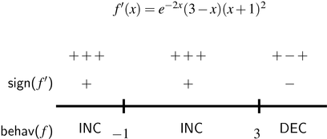Figure3.1.5The first derivative sign chart for a function \(f\) whose derivative is given by the formula \(f'(x) = e^{-2x}(3-x)(x+1)^2\).
The first derivative sign chart in Figure 3.1.5 comes from thinking about the sign of each of the terms in the factored form of \(f'(x)\) at one selected point in the interval under consideration. For instance, for \(x \lt -1\), we could consider \(x = -2\) and determine the sign of \(e^{-2x}\), \((3-x)\), and \((x+1)^2\) at the value \(x = -2\). We note that both \(e^{-2x}\) and \((x+1)^2\) are positive regardless of the value of \(x\), while \((3-x)\) is also positive at \(x = -2\). Hence, each of the three terms in \(f'\) is positive, which we indicate by writing “\(+++\).” Taking the product of three positive terms obviously results in a value that is positive, which we denote by the “\(+\)” in the interval to the left of \(x = -1\) indicating the overall sign of \(f'\). And, since \(f'\) is positive on that interval, we further know that \(f\) is increasing, which we summarize by writing “INC” to represent the corresponding behavior of \(f\). In a similar way, we find that \(f'\) is positive and \(f\) is increasing on \(-1 \lt x \lt 3\), and \(f'\) is negative and \(f\) is decreasing for \(x > 3\).
Now, by the first derivative test, to find relative extremes of \(f\) we look for critical numbers at which \(f'\) changes sign. In this example, \(f'\) only changes sign at \(x = 3\), where \(f'\) changes from positive to negative, and thus \(f\) has a relative maximum at \(x = 3\). While \(f\) has a critical number at \(x = -1\), since \(f\) is increasing both before and after \(x = -1\), \(f\) has neither a minimum nor a maximum at \(x = -1\).
Suppose that \(g(x)\) is a function continuous for every value of \(x \ne 2\) whose first derivative is \(\ds g'(x) = \frac{(x+4)(x-1)^2}{x-2}\). Further, assume that it is known that \(g\) has a vertical asymptote at \(x = 2\).
Determine all critical numbers of \(g\).
By developing a carefully labeled first derivative sign chart, decide whether \(g\) has as a local maximum, local minimum, or neither at each critical number.
Does \(g\) have a global maximum? global minimum? Justify your claims.
What is the value of \(\ds \lim_{x \to \infty} g'(x)\)? What does the value of this limit tell you about the long-term behavior of \(g\)?
Since \(\ds g'(x) = \frac{(x+4)(x-1)^2}{x-2}\), we see that \(g'(x) = 0\) implies that \(x = -4\) or \(x = 1\). While \(x = 2\) makes \(g'\) undefined, we are told that \(g\) has a vertical asymptote at \(x = 2\), so \(x = 2\) is not in the domain of \(g\), and hence is technically not a critical value of \(g\). Nonetheless, we place \(x = 2\) on our first derivative sign chart since the vertical asymptote is a location at which \(g'\) may change sign.
The first derivative sign chart shows that \(g'(x) > 0\) for \(x \lt -4\), \(g'(x) \lt 0\) for \(-4 \lt x \lt 1\), \(g'(x) \lt 0\) for \(1 \lt x \lt 2\), and \(g'(x) > 0\) for \(x > 2\). By the first derivative test, \(g\) has a local maximum at \(x = -4\) and neither a max nor min at \(x = 1\). As these are the only two critical values, these are the only two locations for possible extremes. (Note: although \(g\) changes from decreasing to increasing at \(x = 2\), this is due to a vertical asymptote, and \(g\) does not have a minimum there.)
Because \(g\) is decreasing as \(x \to 2^-\) (where \(g\) has a vertical asymptote), \(g\) does not have a global minimum. For \(x > 2\), \(g\) is always increasing, which suggests that \(g\) does not have a global maximum (though we do not know for sure that \(g\) increases without bound).
We observe that
\begin{align*}
\lim_{x \to \infty} g'(x) \amp = \amp \lim_{x \to \infty} \frac{(x+4)(x-1)^2}{x-2}\\
\amp = \amp \lim_{x \to \infty} \frac{x^3 + 2x^2 - 7x + 4}{x-2} \cdot \frac{\frac{1}{x}}{\frac{1}{x}}\\
\amp = \amp \lim_{x \to \infty} \frac{x^2 + 2x - 7 + \frac{4}{x}}{1 - \frac{2}{x}}\\
\amp = \amp \infty
\end{align*}
Since \(g'(x) \to \infty\) as \(x \to \infty\), this tells us that \(g\) increases without bound as \(x \to \infty\).
From all of our work above, we know that \(g\) has a local maximum at \(x = -4\), a horizontal tangent line with neither a max nor min at \(x = 1\), and a vertical asymptote at \(x = 2\), plus \(g\) and \(g'\) both increase without bound as \(x \to \infty\). Thus, a possible graph of \(g\) is the following.
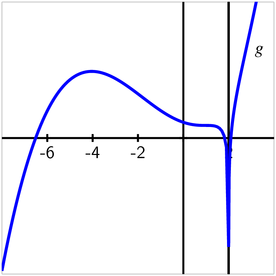
Subsection3.1.3The second derivative test
Recall that the second derivative of a function tells us several important things about the behavior of the function itself. For instance, if \(f''\) is positive on an interval, then we know that \(f'\) is increasing on that interval and, consequently, that \(f\) is concave up, which also tells us that throughout the interval the tangent line to \(y = f(x)\) lies below the curve at every point. In this situation where we know that \(f'(p) = 0\), it turns out that the sign of the second derivative determines whether \(f\) has a local minimum or local maximum at the critical number \(p\).
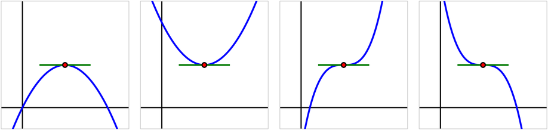Figure3.1.7Four possible graphs of a function \(f\) with a horizontal tangent line at a critical point.
In Figure 3.1.7, we see the four possibilities for a function \(f\) that has a critical number \(p\) at which \(f'(p) = 0\), provided \(f''(p)\) is not zero on an interval including \(p\) (except possibly at \(p\)). On either side of the critical number, \(f''\) can be either positive or negative, and hence \(f\) can be either concave up or concave down. In the first two graphs, \(f\) does not change concavity at \(p\), and in those situations, \(f\) has either a local minimum or local maximum. In particular, if \(f'(p) = 0\) and \(f''(p) \lt 0\), then we know \(f\) is concave down at \(p\) with a horizontal tangent line, and this guarantees \(f\) has a local maximum there. This fact, along with the corresponding statement for when \(f''(p)\) is positive, is stated in the second derivative test.
{
Second Derivative Test:\knownindex{\lt main>second derivative test\lt /main>} If \(p\) is a critical number of a continuous function \(f\) such that \(f'(p) = 0\) and \(f''(p) \ne 0\), then \(f\) has a relative maximum at \(p\) if and only if \(f''(p) \lt 0\), and \(f\) has a relative minimum at \(p\) if and only if \(f''(p) > 0\).
}
In the event that \(f''(p) = 0\), the second derivative test is inconclusive. That is, the test doesn't provide us any information. This is because if \(f''(p) = 0\), it is possible that \(f\) has a local minimum, local maximum, or neither. 1 Consider the functions \(f(x) = x^4\), \(g(x) = -x^4\), and \(h(x) = x^3\) at the critical point \(p = 0\).
Just as a first derivative sign chart reveals all of the increasing and decreasing behavior of a function, we can construct a second derivative sign chart that demonstrates all of the important information involving concavity.
Let \(f(x)\) be a function whose first derivative is \(f'(x) = 3x^4 - 9x^2\). Construct both first and second derivative sign charts for \(f\), fully discuss where \(f\) is increasing and decreasing and concave up and concave down, identify all relative extreme values, and sketch a possible graph of \(f\).
Solution.
Since we know \(f'(x) = 3x^4 - 9x^2\), we can find the critical numbers of \(f\) by solving \(3x^4 - 9x^2 = 0\). Factoring, we observe that
so that \(x = 0, \pm\sqrt{3}\) are the three critical numbers of \(f\). It then follows that the first derivative sign chart for \(f\) is given in Figure 3.1.9.
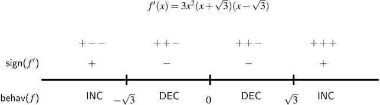Figure3.1.9The first derivative sign chart for \(f\) when \(f'(x) = 3x^4 - 9x^2 = 3x^2(x^2-3)\).
Thus, \(f\) is increasing on the intervals \((-\infty, -\sqrt{3})\) and \((\sqrt{3}, \infty)\), while \(f\) is decreasing on \((-\sqrt{3},0)\) and \((0, \sqrt{3})\). Note particularly that by the first derivative test, this information tells us that \(f\) has a local maximum at \(x = -\sqrt{3}\) and a local minimum at \(x = \sqrt{3}\). While \(f\) also has a critical number at \(x = 0\), neither a maximum nor minimum occurs there since \(f'\) does not change sign at \(x = 0\).
Next, we move on to investigate concavity. Differentiating \(f'(x) = 3x^4 - 9x^2\), we see that \(f''(x) = 12x^3 - 18x\). Since we are interested in knowing the intervals on which \(f''\) is positive and negative, we first find where \(f''(x) = 0\). Observe that
which implies that \(x = 0, \pm\sqrt{\frac{3}{2}}\). Building a sign chart for \(f''\) in the exact same way we do for \(f'\), we see the result shown in Figure 3.1.10.
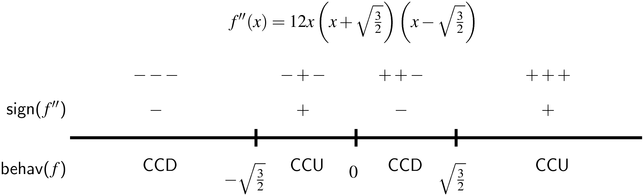Figure3.1.10The second derivative sign chart for \(f\) when \(f''(x) = 12x^3-18x = 12x^2\left(x^2-\sqrt{\frac{3}{2}}\right)\).
Therefore, \(f\) is concave down on the intervals \((-\infty, -\sqrt{\frac{3}{2}})\) and \((0, \sqrt{\frac{3}{2}})\), and concave up on \((0, \sqrt{\frac{3}{2}})\) and \((\sqrt{\frac{3}{2}}, \infty)\).
Putting all of the above information together, we now see a complete and accurate possible graph of \(f\) in Figure 3.1.11.
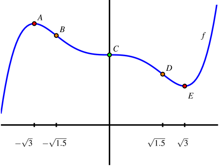Figure3.1.11A possible graph of the function \(f\) in Example 3.1.8.
The point \(A = (-\sqrt{3}, f(-\sqrt{3})\) is a local maximum, as \(f\) is increasing prior to \(A\) and decreasing after; similarly, the point \(E = (\sqrt{3}, f(\sqrt{3})\) is a local minimum. Note, too, that \(f\) is concave down at \(A\) and concave up at \(B\), which is consistent both with our second derivative sign chart and the second derivative test. At points \(B\) and \(D\), concavity changes, as we saw in the results of the second derivative sign chart in Figure 3.1.10. Finally, at point \(C\), \(f\) has a critical point with a horizontal tangent line, but neither a maximum nor a minimum occurs there since \(f\) is decreasing both before and after \(C\). It is also the case that concavity changes at \(C\).
While we completely understand where \(f\) is increasing and decreasing, where \(f\) is concave up and concave down, and where \(f\) has relative extremes, we do not know any specific information about the \(y\)-coordinates of points on the curve. For instance, while we know that \(f\) has a local maximum at \(x = -\sqrt{3}\), we don't know the value of that maximum because we do not know \(f(-\sqrt{3})\). Any vertical translation of our sketch of \(f\) in Figure 3.1.11 would satisfy the given criteria for \(f\).
\hspace{5.0in}
Points \(B\), \(C\), and \(D\) in Figure 3.1.11 are locations at which the concavity of \(f\) changes. We give a special name to any such point: if \(p\) is a value in the domain of a continuous function \(f\) at which \(f\) changes concavity, then we say that \((p,f(p))\) is an inflection point \knownindex{\lt main>inflection point\lt /main>} of \(f\). Just as we look for locations where \(f\) changes from increasing to decreasing at points where \(f'(p) = 0\) or \(f'(p)\) is undefined, so too we find where \(f''(p) = 0\) or \(f''(p)\) is undefined to see if there are points of inflection at these locations.
It is important at this point in our study to remind ourselves of the big picture that derivatives help to paint: the sign of the first derivative \(f'\) tells us whether the function \(f\) is increasing or decreasing, while the sign of the second derivative \(f''\) tells us how the function \(f\) is increasing or decreasing.
Suppose that \(g\) is a function whose second derivative, \(g''\), is given by the following graph.
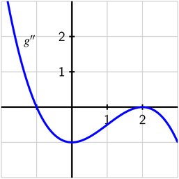Figure3.1.13The graph of \(y = g''(x)\).
Find all points of inflection of \(g\).
Fully describe the concavity of \(g\) by making an appropriate sign chart.
Suppose you are given that \(g'(-1.67857351) = 0\). Is there is a local maximum, local minimum, or neither (for the function \(g\)) at this critical point of \(g\), or is it impossible to say? Why?
Assuming that \(g''(x)\) is a polynomial (and that all important behavior of \(g''\) is seen in the graph above, what degree polynomial do you think \(g(x)\) is? Why?
Based on the given graph of \(g''\), the only point at which \(g''\) changes sign is \(x = -1\), and hence this is an inflection point of \(g\).
Note that \(g''(x) > 0\) for \(x \lt -1\), \(g''(x) \lt 0\) for \(-1 \lt x \lt 2\), and \(g''(x) \lt 0\) for \(x > 2\). This tells us that \(g\) is concave up for \(x \lt -1\), concave down for \(-1 \lt x \lt 2\), and concave down for \(x > 2\).
Given that \(g'(-1.67857351) = 0\), we know that \(g\) has a horizontal tangent line at this critical value. In addition, from the given graph of \(g''\), we see that \(g''( -1.67857351) > 0\) and observe that \(g\) is concave up at \(x\)-values near \(-1.67857351\). By the second derivative test, \(g\) has a local minimum at \(x = -1.67857351\).
From the given graph, since \(g''\) has a simple zero at \(x = -1\) and a repeated zero at \(x = 2\), it appears that \(g''\) is a degree 3 polynomial. If so, then \(g'\) is a degree 4 polynomial, and \(g\) is a degree 5 polynomial.
As we will see in more detail in the following section, derivatives also help us to understand families of functions that differ only by changing one or more parameters. For instance, we might be interested in understanding the behavior of all functions of the form \(f(x) = a(x-h)^2 + k\) where \(a\), \(h\), and \(k\) are numbers that may vary. In the following activity, we investigate a particular example where the value of a single parameter has considerable impact on how the graph appears.
Consider the family of functions given by \(h(x) = x^2 + \cos(kx)\), where \(k\) is an arbitrary positive real number.
Use a graphing utility to sketch the graph of \(h\) for several different \(k\)-values, including \(k = 1,3,5,10\). Plot \(h(x) = x^2 + \cos(3x)\) on the axes provided below.
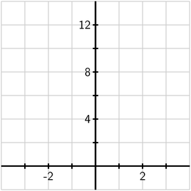Figure3.1.15Axes for plotting \(y = h(x)\).
What is the smallest value of \(k\) at which you think you can see (just by looking at the graph) at least one inflection point on the graph of \(h\)?
Explain why the graph of \(h\) has no inflection points if \(k \le \sqrt{2}\), but infinitely many inflection points if \(k > \sqrt{2}\).
Explain why, no matter the value of \(k\), \(h\) can only have finitely many critical numbers.
In the graph below,
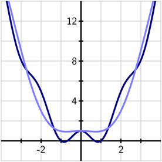\(h(x) = x^2 + \cos(3x)\) is given in dark blue, while \(h(x) = x^2 + \cos(1.6x)\) is shown in light blue. Close inspection of the light blue graph reveals some subtle changes in concavity around \(x \approx \pm 0.5\). For values smaller than \(1.6\), it is very hard to visually detect any inflection points in \(h(x)\).
Treating \(k\) as an arbitrary constant, we first observe that \(h'(x) = 2x - k\sin(kx)\). Again treating \(k\) as a constant and differentiating, we find
\[
h''(x) = 2 - k^2\cos(kx).
\]
We seek the values of \(x\) for which \(h''(x) = 0\) at which \(h''\) changes sign. Setting \(h''(x) = 0\) and rearranging the resulting equation, we now seek \(x\) such that
\[
k^2 \cos(kx) = 2,
\]
or
\[
\cos(kx) = \frac{2}{k^2}.
\]
Now, remember that \(k\) is an arbitrary positive constant and recall that \(-1 \le \cos(\theta) \le 1\) for all input values \(\theta\). If \(\frac{2}{k^2} > 1\), then the equation \(\cos(kx) = \frac{2}{k^2}\) has no solution. Hence, whenever \(k^2 \lt 2\), or \(k \lt \sqrt{2} \approx 1.414\), it follows that the equation \(\cos(kx) = \frac{2}{k^2}\) has no solutions \(x\), which means that \(h''(x)\) is never zero (indeed, for these \(k\)-values, \(h''(x)\) is always positive so that \(h\) is always concave up).
On the other hand, if \(k \ge \sqrt{2}\), then \(\frac{2}{k^2} \le 1\), which guarantees that \(\cos(kx) = \frac{2}{k^2}\) has infinitely many solutions, due to the periodicity of the cosine function. At each such point, \(h''(x) = 2 - k^2 \cos(kx)\) changes sign, and therefore \(h\) has infinitely many inflection points whenever \(k \ge \sqrt{2}\).
To see why \(h\) can only have a finite number of critical values regardless of the value of \(k\), consider the equation
\[
0 = h'(x) = 2x - k\sin(kx),
\]
which implies that \(2x = k\sin(kx)\). Since \(-1 \le \sin(kx) \le 1\), we know that \(-k \le k\sin(kx) \le k\). Once \(|x|\) is sufficiently large, we are guaranteed that \(|2x| > k\), which means that for large \(x\), \(2x\) and \(k\sin(kx)\) cannot intersect. Moreover, for relatively small values of \(x\), the functions \(2x\) and \(k\sin(kx)\) can only intersect finitely many times since \(k\sin(kx)\) oscillates a finite number of times. This is why \(h\) can only have a finite number of critical values, regardless of the value of \(k\).
\item The critical values of a continuous function \(f\) are the values of \(p\) for which \(f'(p) = 0\) or \(f'(p)\) does not exist. These values are important because they identify horizontal tangent lines or corner points on the graph, which are the only possible locations at which a local maximum or local minimum can occur.
\item Given a differentiable function \(f\), whenever \(f'\) is positive, \(f\) is increasing; whenever \(f'\) is negative, \(f\) is decreasing. The first derivative test tells us that at any point where \(f\) changes from increasing to decreasing, \(f\) has a local maximum, while conversely at any point where \(f\) changes from decreasing to increasing \(f\) has a local minimum.
\item Given a twice differentiable function \(f\), if we have a horizontal tangent line at \(x = p\) and \(f''(p)\) is nonzero, then the fact that \(f''\) tells us the concavity of \(f\) will determine whether \(f\) has a maximum or minimum at \(x = p\). In particular, if \(f'(p) = 0\) and \(f''(p) \lt 0\), then \(f\) is concave down at \(p\) and \(f\) has a local maximum there, while if \(f'(p) = 0\) and \(f''(p) > 0\), then \(f\) has a local minimum at \(p\). If \(f'(p) = 0\) and \(f''(p) = 0\), then the second derivative does not tell us whether \(f\) has a local extreme at \(p\) or not.
\hrulefill
\begin{exercises}
\item This problem concerns a function about which the following information is known:
\(f\) is a differentiable function defined at every real number \(x\)
\(f(0) = -1/2\)
\(y = f'(x)\) has its graph given at center in Figure 3.1.16
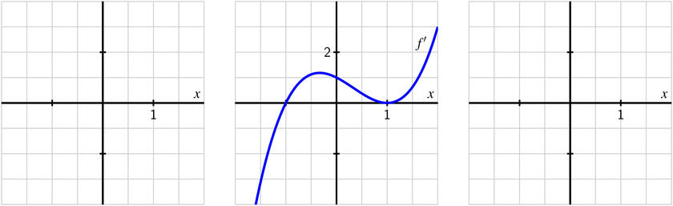Figure3.1.16At center, a graph of \(y = f'(x)\); at left, axes for plotting \(y = f(x)\); at right, axes for plotting \(y = f''(x)\).
Construct a first derivative sign chart for \(f\). Clearly identify all critical numbers of \(f\), where \(f\) is increasing and decreasing, and where \(f\) has local extrema.
On the right-hand axes, sketch an approximate graph of \(y = f''(x)\).
Construct a second derivative sign chart for \(f\). Clearly identify where \(f\) is concave up and concave down, as well as all inflection points.
On the left-hand axes, sketch a possible graph of \(y = f(x)\).
\item Suppose that \(g\) is a differentiable function and \(g'(2) = 0\). In addition, suppose that on \(1 \lt x\lt 2\) and \(2 \lt x \lt 3\) it is known that \(g'(x)\) is positive.
Does \(g\) have a local maximum, local minimum, or neither at \(x = 2\)? Why?
Suppose that \(g''(x)\) exists for every \(x\) such that \(1 \lt x \lt 3\). Reasoning graphically, describe the behavior of \(g''(x)\) for \(x\)-values near \(2\).
Besides being a critical number of \(g\), what is special about the value \(x = 2\) in terms of the behavior of the graph of \(g\)?
\item Suppose that \(h\) is a differentiable function whose first derivative is given by the graph in Figure 3.1.17.
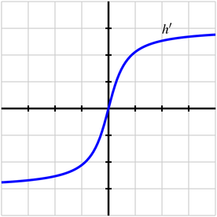Figure3.1.17The graph of \(y = h'(x)\).
How many real number solutions can the equation \(h(x) = 0\) have? Why?
If \(h(x) = 0\) has two distinct real solutions, what can you say about the signs of the two solutions? Why?
Assume that \(\lim_{x \to \infty} h'(x) = 3\), as appears to be indicated in Figure 3.1.17. How will the graph of \(y = h(x)\) appear as \(x \to \infty\)? Why?
Describe the concavity of \(y = h(x)\) as fully as you can from the provided information.
\item Let \(p\) be a function whose second derivative is \(p''(x) = (x+1)(x-2)e^{-x}\).
Construct a second derivative sign chart for \(p\) and determine all inflection points of \(p\).
Suppose you also know that \(x = \frac{\sqrt{5}-1}{2}\) is a critical number of \(p\). Does \(p\) have a local minimum, local maximum, or neither at \(x = \frac{\sqrt{5}-1}{2}\)? Why?
If the point \((2, \frac{12}{e^2})\) lies on the graph of \(y = p(x)\) and \(p'(2) = -\frac{5}{e^2}\), find the equation of the tangent line to \(y = p(x)\) at the point where \(x = 2\). Does the tangent line lie above the curve, below the curve, or neither at this value? Why?